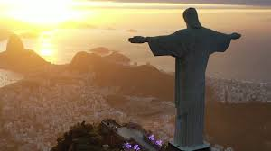
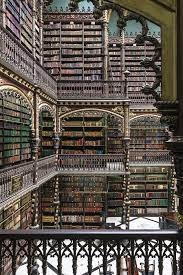
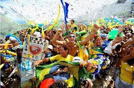

Curiosidade sobre a Cidade

O Rio de Janeiro possui um das 7 maravilhas do mundo moderno
O Rio contém muitas belezas naturais que são dignas de cartão-postal, mas sua atração mais famosa não só foi construída pelo homem, mas também eleita uma das 7 Novas Maravilhas do Mundo em 2007.

A oitava maior biblioteca do mundo fica no Rio de Janeiro
A fundação da mesma vem de um cenário conturbado, mas a realização nobre é um orgulho nacional trazido por Dom João VI.

O Rio sediou as olímpiadas de 2016
Ficando de fora das quatro cidades que o Comitê Olímpico Internacional escolheu, obtendo uma nota menor que Doha, capital do Qatar.Mas infelizmente ou felizmente a cidade acabou sendo retirada da lista devido as suas temperaturas exorbitantes durante o verão.